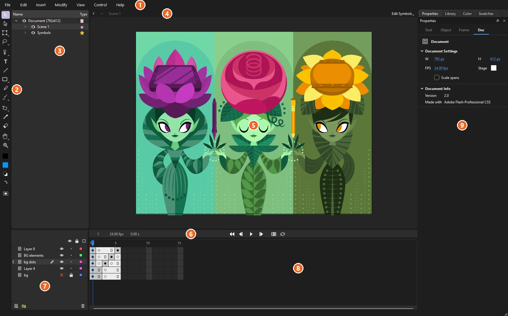
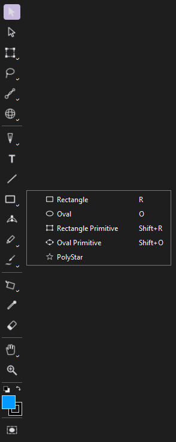
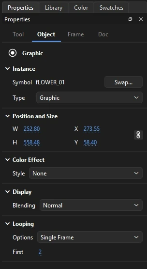
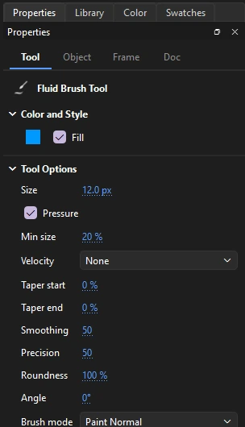
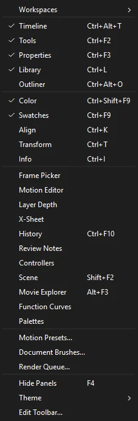
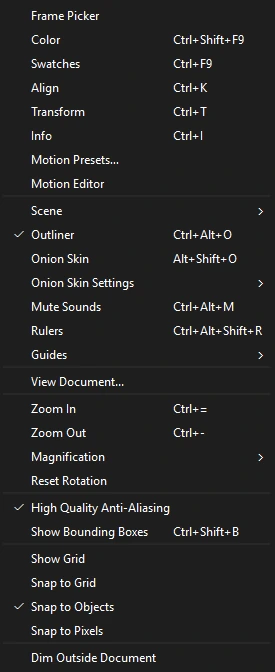
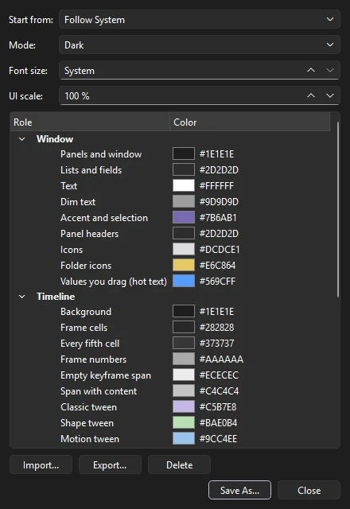
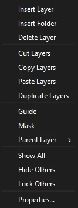

Workspace
The workspace
Phoenix keeps the stage in the middle and everything that acts on it around the edges. This page names each area and the panels you can open.

- Menu bar: File, Edit, Insert, Modify, View, Control, Window and Help.
- Tools panel: drawing and editing tools, the stroke and fill colors, and the Object Drawing switch.
- Edit bar: where you are in the document (the scene, and any symbol you have opened), with a Back button and the Edit Symbols list, then the stage controls: Center Stage, Rotation, whether content outside the stage is shown, dimmed or clipped, and the zoom box with its magnification menu. When more than one document is open, their tabs sit above it; right-click a tab to close it or others, copy its path, or move it to a window of its own (see Several documents).
- Stage: the visible area of your animation, on a gray pasteboard where you can park artwork off screen.
- Timeline header: the current frame, frame rate and time, the playback controls, onion skinning and looping.
- Layers: the layer stack, with visibility, lock and outline controls.
- Frame grid: the frames of every layer over time.
- Panel dock: Properties, Library, Color and Swatches as tabs, with room for more panels.
The Tools panel
The Tools panel starts as a column on the left. Related tools share a slot: a small corner mark on a button means there is more than one tool in it. Press and hold the button to see the others, and the one you pick takes over the slot. Every tool's shortcut key works even while its tool is hidden in a slot.
The tools flow to fill the panel. Drag its edge to make it wider and they arrange themselves in as many columns as fit; dock it along the top or bottom of the window and they run in rows instead. Drag the row of grip dots at its end to move the panel, or double-click the grip to float it or dock it again.
To rearrange the tools, choose , or right-click the Tools panel and choose Edit Toolbar.... Drag a tool into a slot to group it there, between slots to give it a slot of its own, or under Hidden to take it off the panel; a hidden tool still works by its key. The first tool in a slot is the one shown. Add Line adds a divider between sections, and Reset puts back Phoenix's own layout.

Below the tools are:
- Black and white, which resets to a black stroke and white fill, and Swap colors, which exchanges the stroke and fill colors: the two small buttons side by side.
- The stroke and fill color swatches. The stroke is drawn as an outline in its color, the fill as a solid square. Click one to choose a color, including its transparency.
- Object Drawing (J), which decides whether new shapes merge with what is under them. See Merge and object drawing.
Hold Ctrl with any tool to use the Selection tool for a moment. See Drawing tools for every tool and its options.
The Properties panel
The Properties panel shows settings for whatever you are working on. It has four tabs, and Phoenix switches between them for you:
- Tool
- Options for the current tool, plus the fill and stroke it will draw with. Shown when you pick a tool.
- Object
- Position, size, color and effects of the selection. Shown when you select something on the stage.
- Frame
- The label, tween, ease and sound of the frame under the playhead. Shown when you click in the frame grid.
- Doc
- Stage size, frame rate and stage color. Shown when nothing is selected with the Selection tool.


Hot text
Every number you can change in Phoenix, in the panels and in dialogs alike, is hot text: an underlined value you drag across to scrub, or click to type into.
| Do this | To |
|---|---|
| Drag left or right | Scrub the value |
| Shift while dragging | Change it ten times faster |
| Ctrl while dragging | Change it in tenths, for fine adjustment |
| Click, type, Enter | Enter an exact value. In a dialog, Enter also presses its main button, such as OK |
| F2 | Start typing into the value you have tabbed or clicked to |
| Esc while typing | Cancel and keep the old value |
| Tab | Move to the next value, ready to type |
| ↑ ↓, or the mouse wheel | Step the value up or down (Page Up and Page Down step ten times as far). The wheel only changes a value you have clicked or tabbed into, so scrolling a panel never changes one by accident |
Every change made in the Properties panel is a single step you can undo.
Other panels
Every panel opens from the Window menu, which ticks the ones that are open. Choosing an open panel that is in view closes it; choosing one that is closed, or hidden behind another tab, brings it to the front. The keys work with the menu closed too.

| Panel | Key | Use it to |
|---|---|---|
| Timeline | Ctrl+Alt+T | Work with layers and frames |
| Tools | Ctrl+F2 | Pick drawing and selection tools |
| Properties | Ctrl+F3 | Change the selection, the tool, the frame or the document |
| Library | Ctrl+L | Browse and organize symbols, bitmaps and sounds |
| Outliner | Ctrl+Alt+O | See the document as a tree |
| Color | Ctrl+Shift+F9 | Choose solid, gradient and bitmap fills |
| Swatches | Ctrl+F9 | Pick from the document's saved colors |
| Align | Ctrl+K | Line up, distribute, match sizes and space objects |
| Transform | Ctrl+T | Scale, rotate and skew by exact amounts |
| Info | Ctrl+I | Read the size, position, cursor position and color under the cursor |
| Frame Picker | — | Choose which frame a graphic symbol shows, from thumbnails |
| Motion Editor | — | Edit a motion tween's property curves |
| Layer Depth | — | Set how far each layer sits from the multiplane camera |
| X-Sheet | — | Type each layer's exposures frame by frame, by drawing number |
| History | Ctrl+F10 | See every step you can undo, and go back or forward to one |
| Review Notes | — | Read and add notes on frames that never export |
| Controllers | — | Drive properties on several layers with one slider |
| Scene | Shift+F2 | Switch, add, duplicate, delete, rename and reorder scenes |
| Movie Explorer | Alt+F3 | Browse the whole document as a tree |
| Function Curves | — | Edit any property of the current layer as a curve over time |
| Palettes | — | Recolor everything linked to a palette's named colors |
The Window menu also opens Motion Presets, Document Brushes and the Render Queue, and has Workspaces, Hide Panels, Theme and Edit Toolbar..., described below.

Arranging panels
Every panel, including the timeline, the Tools panel and the outliner, is a docked window. Drag a panel by its title bar to move it to any edge of the window or onto another panel to make a tab group, or click the float button in its title bar to give it a window of its own. Phoenix remembers the layout between sessions, and a floating panel left on a screen that is no longer connected comes back onto the main one.
A document moved to a window of its own gets its own stage, timeline and panels, laid out as in the first window. Arranging the panels there changes that window only: the layout Phoenix remembers, and the window's place on the screen, are the first window's.
Press F4 () to hide every open panel and see the stage alone. Press it again to bring them back.
Workspaces
A workspace is a saved arrangement of the panels, the Tools panel's layout and the width of the layers list. Switch between them under . Phoenix comes with four:
- Essentials
- Phoenix's own layout: the tools on the left, the timeline below the stage, and Properties, Library, Color and Swatches as tabs on the right.
- Animator
- A tall timeline with the Motion Editor and Layer Depth as tabs beside it, the Frame Picker among the panels, and the tools in two columns.
- Designer
- Color, Swatches, Align, Transform and Info grouped under Properties, a short timeline, and the tools in two columns.
- Classic
- The timeline above the stage, and the tools down the right beside Properties and the Library.
The rest of the Workspaces menu manages them:
- New Workspace...
- Saves the current layout under a new name.
- Save Workspace
- Saves the current layout over the workspace in use.
- Reset
- Puts the workspace in use back the way it was last saved.
- Rename Workspace, Delete Workspace
- Rename or delete one of your own workspaces. The built-in ones stay.
- Import Workspace..., Export Workspace...
- Pass a workspace to another machine as a
.phxworkspacefile. An imported workspace never replaces one you have; it gets a number after its name instead.
Themes
sets the colors of Phoenix's window. Follow System (the default) is dark or light as your system is; Dark and Light stay as they are; Turquoise is a built-in example of a theme of its own. Themes you save are listed after them.
Choose to make your own. Changes show on the window as you make them.

- Start from
- The theme to begin with.
- Mode
- Dark or Light: how the window's controls are drawn. Colors you leave alone take the mode's own.
- Font size
- The size of the text in the window, or System for your system's size.
- UI scale
- The size of everything in Phoenix's window, from 75% to 250%. It takes effect the next time Phoenix starts.
- Colors
- Every color the window uses, grouped as Window, Timeline, Stage and Graphs: panels, text, hot text, frame cells and tween spans, the playhead, the pasteboard, rulers, onion skin colors and graph backgrounds. Double-click a color to change it; right-click it to put back the mode's own. Colors the theme sets itself are shown in italics.
Save As... names the theme and uses it. Import... and Export... read and write .phxtheme files, and Delete removes one of your themes. Close without saving puts back the theme you had.
History and Repeat
(Ctrl+F10) lists every step you can undo, from Opened at the top to your latest change. Click a step to undo or redo back to it. Steps you have undone are grayed until you redo them or make a new change. The Undo and Redo commands in the Edit menu also name the step they undo or redo.
(Ctrl+Shift+Y) runs the last command you chose from the Insert or Modify menu, or from , again on what is selected now. The menu names the command it will repeat.
Find and Replace
Choose (Ctrl+F) to search the whole document, every scene and every symbol, for Text (with Match case and Whole word), a Font, a Color (in fills, strokes, gradients and text), a Symbol's instances, a Sound on the keyframes that play it, or a Bitmap in its instances and bitmap fills. Find All lists where each is; click one to go there. Replace All changes them all as one step you can undo.
Movie Explorer
(Alt+F3) shows the whole document as a tree: each scene's layers, their keyframes with labels, scripts and sounds, and what is on them, with symbol instances by symbol and instance name and text by what it says. Symbol Definitions lists every symbol's own contents the same way. The buttons above choose what is listed: Text, Symbols, Scripts, Media (bitmaps and sounds) and Frames (layers and labeled frames with nothing else shown). Type in the search box to narrow it to names and text that match. Click an entry to go to it on the stage. The ☰ menu has Show in Library, Expand All, Collapse All and Copy All Text to Clipboard.
The outliner
Open the outliner with (Ctrl+Alt+O). It shows the whole document as a tree: scenes, layers, frames, and the elements on them, down to individual paths and edges in a shape. Select something in the outliner and it is selected on the stage too. It is a quick way to find a small or hidden element in a crowded scene.
The status bar
The bar along the bottom of the window shows how many objects are selected, confirms saves and exports, and shows the progress of an update download.
Context menus
Right-click almost anywhere for the commands that apply there:
- On the stage: cut, copy and paste; arrange; transform; distribute to layers; convert to symbol; edit, edit in place or swap a symbol; break apart; group and ungroup.
- On a layer: insert and delete layers and folders; cut, copy, paste and duplicate layers; guide and mask types; the parent layer; show all, hide others and lock others; and layer properties.
- On frames: tweens, frames and keyframes, cut, copy and paste frames, paste and overwrite, reverse frames, convert to frame-by-frame, and copy and paste motion.
- In the Library: rename, duplicate, delete, copy and paste items, new symbols, folders and fonts, properties, and selecting unused items.
- On the Tools panel: Edit Toolbar.
